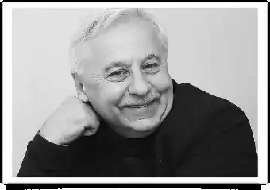
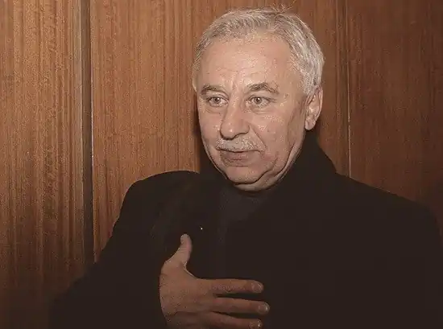
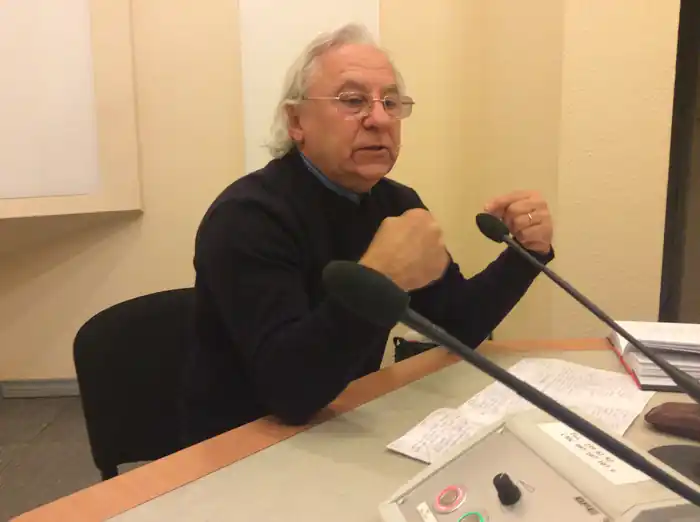

Народився 6 липня 1950 в с. Жвані на Вінниччині. Дуже рано втратив батька, який був комбайнером. Багатодітна родина залишилася без годувальника. Середню освіту здобував у Тульчинському та Мурованокуриловецькому інтернатах. Вступив на філологічний факультет Київського університету імені Т.Шевченка, з якого на передостанньому курсі був відрахований за "український націоналізм".
1973 закінчив Вінницький педагогічний інститут, недовго працював учителем. Річ у тому, що з дитинства марив кіномистецтвом. Працював монтувальником декорацій у Київському театрі російської драми імені Лесі Українки. Вступив на факультет кінорежисури Київського театрального інституту імені І. Карпенка-Карого. Працював на Київській кіностудії художніх фільмів імені О. Довженка. Писав кіносценарії. Вірші почав писати з четвертого класу. Зараз працює режисером і редактором на ТРК "Студія 1+1", зокрема відповідає за дубляжі українською мовою іноземних фільмів. А перша поетична збірка "Рушник землі" (1984), до якої він ішов досить довго і відповідально, засвідчила про зрілість його непересічного таланту. Є лауреатом премії імені Василя Симоненка.
Життєвий шлях Станіслава Чернілевського був вельми непростим. Хлопчик залишився без батька у багатодітній родині, тож довелося здобувати середню освіту в школах-інтернатах. Не відразу Станіславу пощастило з вибором "сродної" професії. Спочатку недовго працював учителем після закінчення Вінницького педагогічного інституту, але не вважав цю боту справді "своєю". З дитинства Чернілевський марив кінематографом і прагнув вступити на факультет кінорежисури. Його мрія збулася. У стінах Київського театрального інституту імені І. Карпенка-Карого він здобув фах кіносценариста. Працював на Київській кіностудії художніх фільмів імені О. Довженка. Проте де б не був Станіслав Чернілевський, яку життєву проезжую часть собі не обрав би, він, перш за все, поет. Йому заслужено було присуджено премію імені Василя Симоненка. Поезія Чернілевського бере свої початки і мотиви в дитячих мріях. Дмитро Павличко у передмові до книжки С. Чернілевського "Рушник землі" писав: "Є такі серця, для котрих розлука з матір'ю — смертне страждання..." З його дитячих мук, з тужби за мамою, перших стражденних почувань народжувалися його вимогливі поняття людини і світу, емоційні хвилі душі, котрі проносилися спустя усе дитинство й молодість, щоб ударити нині гучним прибоєм поетичного текста". Про палку любов до рідної неньки свідчить вірш "Теплота родинного інтиму". Мати творить чудо, намагаючись зігріти свою родину, вона запалює піч і прив'язує "мотузком диму" хату до небес. У неї в поятояльцах уже дорослий син, але в хаті, зігрітій материнським теплом, він знову стає малесенькою дитиною, його душа світліє, бо відчуває світло світанкового маминого вогню. Если роз'їхалися діти, мати сумує, знову і знову чекає їх у спорожнілій хаті, щоб зігріти своєю теплотою. Пізніше свої найкращі думки мати пов'язує з онуками. На тему це вірш "Забула внучка в баби черевички". Если літо "перекотилось" за село і осінь тихенько опустила "горіховий листок перед вікном", прийшла пора бабусі прощатися з онучкою, яка гостювала у неї в селі. Маленька дівчинка махнула "рученям", обрызгала повітря дитячим сміхом і поїхала в місто. Випадково забуті маленькі дитячі черевички нагадали бабусі на тему те, як вона була колись маленькою, на тему те, як підростали її діти, на тему маленьку онучку, яку хотілося б бачити частіше. Перед сном бабуся торкнулася до черевичків, щоб уві сні побачити їх маленьку господиню. Любов до матері, до рідного жилищу сформувала особистість Станіслава Чернілевського. Надзвичайно ювелирный лірик, він, як ніхто інший, зумів передати материнську гіркоту і сум розставання з рідними дітьми і онуками.